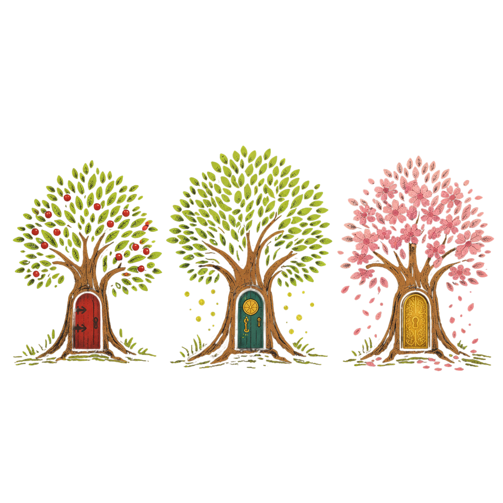

Pre-Boo・Boo-riculum・Boo-Continuumの週ごとの内容と、それを使うアウトプットクラス・英語塾クラスの仕組みをまとめたガイドです。
同じ週の英語。2つのクラス。
Booha Adventureでは、Pre-Boo・Boo-riculum・Boo-Continuumの3つのカリキュラムが、毎週15個の単語・文・質問を共有します。
学び方は、正反対です。アウトプットクラスは反転型。家で内容を見て、教室で話し、自分の言葉で使います。
英語塾クラスは90分間の週ごとのチェック。宿題なしで、同じ内容を時間・順番・ルールのあるテストとして確かめます。
ひとつのBooha World。同じ週の内容。違う方法で、今の力を使い、確かめます。
ブーハー・アドベンチャーは、3つのカリキュラムを持つ週ごとの英語学習アプリです。生徒は名前とPINでログインし、その週に必要な英語にアクセスします。
広告も、おすすめ動画も、余計な機能も一切ありません。AIとも接続していません。完全にプライベートで、使い方を記録したりしません。すべてのデータはお使いのデバイス内に保存されます。私でさえ、保存データを見ることはできません。
毎週3つのチェックポイントが同時に開いています。各週のチェックポイントでは、2つのデッキが開きます：
アウトプットクラスでは、ゲームも家庭学習とレッスンをつなぐ一部です。学習した英語を使わないとクリアできません。英語塾クラスでは、同じ週の内容をテストとして使います。
英語をこれから始める生徒や、基礎からやり直したい生徒向けです。基本語彙と短い文を使い、身近な質問に答える力を育てます。英検5級〜4級程度が目安です。
最も多くの生徒が使う中級カリキュラムです。まとまった文章を読み、自分の意見や理由を英語で伝える力を育てます。英検3級〜2級程度（準2級・準2級プラスを含む）が目安です。
上級者向けです。長い文章や抽象的な話題に取り組み、意見・理由・ニュアンスをより正確に伝える力を育てます。英検準1級〜1級程度、TOEIC L&R 750点以上を目指す内容です。
どのカリキュラムも、1年12テーマ・各月4週間で構成されています。毎週の流れは同じ。内容は変わりますが、流れは変わりません。これが習慣と自信をつくります。
家での準備が前提です。授業中に単語を書き写す時間はありません。
準備してきた生徒は、授業中に話す・聞く・使うことに集中できます。準備していない生徒は苦労します。
Boohaの3つのカリキュラムは、英検・TOEIC対策コースではありません。学習内容の難しさを保護者の方に分かりやすくお伝えするため、英検級（上級レベルではTOEIC L&Rスコア）を目安として示しています。
英検5級〜4級程度
基本語彙と短い文を使い、身近な質問に答える力を育てます。
英検3級〜2級程度（準2級・準2級プラスを含みます）
まとまった文章を読み、自分の意見や理由を英語で伝える力を育てます。
英検準1級〜1級程度 / TOEIC L&R 750点以上を目指す内容
長い文章や抽象的な話題に取り組み、意見・理由・ニュアンスをより正確に伝える力を育てます。
英検公式のレベル説明では、各級を日本の学校段階と次のように関連づけています。
英検とTOEIC L&Rは測る技能と形式が異なるため、750点は英検級との直接的な換算ではなく、Boo-Continuumで目指す目安です。
週の英語を事前に確認していない生徒は、授業中に話すことがなく、退屈になります。準備していない時だけ、それがつらくなります。
車の中や授業直前の確認は、何もしないよりずっといい。でも、大きな成長にはつながりません。
家で英語に触れない生徒は、毎週同じところでつまずきます。
日本語でだけ理解して、英語に触れない場合、話す力はつきません。
小学校低学年以下の生徒は一人で家庭学習を管理できません。保護者が関わっていなければ、子どもも準備できません。